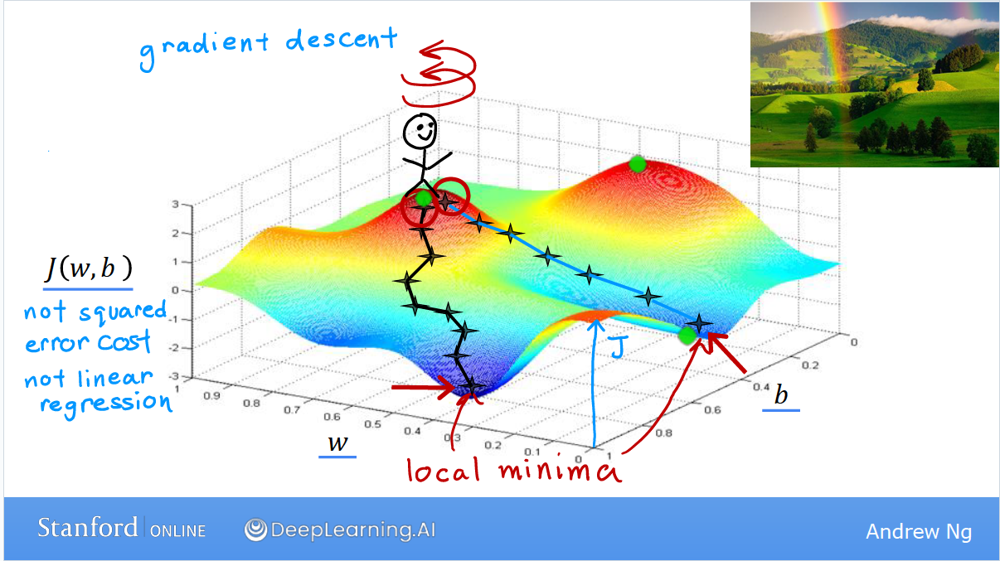
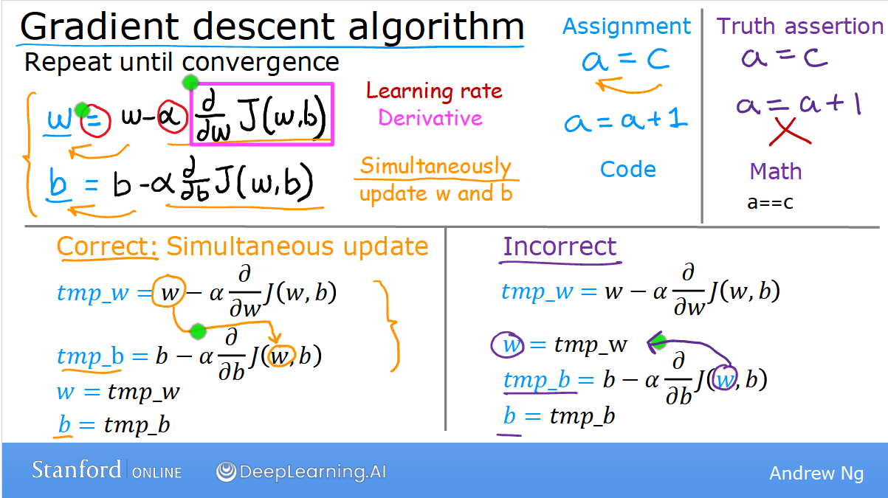

梯度下降算法 （Gradient descent）
假设我们要解决下面的问题：
我们有一个函数（实际上就是成本函数） J($w_1$, $w_2$, ..., $w_n$, b), 我们需要得到这个函数的最小值。
梯度下降算法的思路是： 1. 给出一个初始的猜测值（比如w=0, b=0） 2. 不断改变w和b的值来减小J(w, b)的值，直到获得极小值
需要指出的是最小值可能不止一个。
这个过程类似于我们站在山顶，环顾四周，选择能让我们最快下山的一个方向，迈出一步； 之后再重新环顾四周，选择能让我们最快下山的一个方向，再迈出一步...依次类推，直到抵达山谷： 
初始值的选择对于梯度下降算法非常重要。 选择了差异很小的初始值可能导致最终结果有较大的差异。所有的这些结果都是局部极小值 (local minima)。
上述例子中体现的梯度下降算法的数学表达是：  式中$\alpha$代表学习效率。 这里需要注意两点： 1. 计算机语言中等号"="的含义和数学中的不同，表示将等号右边的值赋值等号左边的变量。等于则是用"=="表示。 2. 每次在迭代（即上面例子中下山时的每一步）的时候，w, b需要同步更新；也就是说不能用更新后的w来计算更新后b的值。